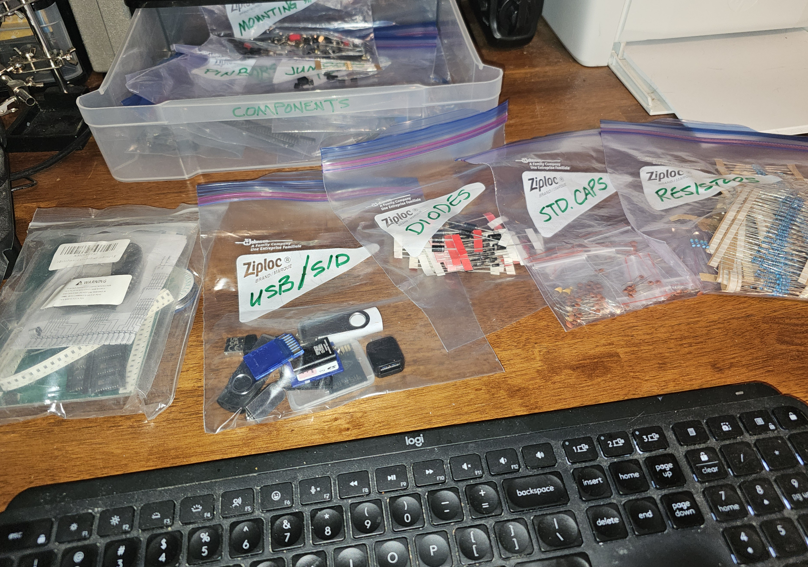

This is my budget bench. It actually used to be smaller, but have a lot more little tiny drawers.
The Electronics Bench
I'm not one to push for expensive tools, fancy gadgets, or store-bought setups. You can use them if you'd like, but they aren't necessary to have a meaningful learning experience or a thriving electronics hobby. What you do need, though, is a stable place to work.
It might be the kitchen table, with a thick piece of wood or a silicone mat to protect Mom's finish. It might be a slab of plywood sitting on two 55-gallon drums or concrete blocks. It might be your desk or table in a corner of your bedroom. Wherever you can find a space -- regardless of whether you have to put things away between sessions, or you can just leave the kit out -- you will need a space.
Substance Over Style
You want to be able to work comfortably, without being too cramped or putting the cat in danger. For this, you'll need some kind of a surface. Mine is my desk in my bedroom/office. It's 60" x 36", and 30" high. It's basically a standard kitchen table.
One of these days I might build one of those workstation tables, with a stool, and shelves, and parts bins, and all that. Given that I'm 66 years old, I might never get around to that. Let me show you how keep my setup simple without compromising on my ability to work.
Simple Storage
My storage is currently two 10x12 plastic drawer stacks, with the contents just written on the drawer handle with a magic marker, like these:

When we lived in a tiny home, I had little tiny drawers for everything. When we bought this farm, and a much bigger house, suddenly we had lots of furniture and decorations, and three bedrooms. Since I didn't want to take over the place, I actually downsized a bit. Never been sorry, never been an issue.
You'll see I have a tool drawer; an "active project" drawer; and the four others you can't see in this photo are "components,", "wires & connectors," "computing & circuits" (NUCs, Raspberry PIs, SDR boards), and one miscellaneous one that isn't marked. It has solder, little project boxes, batteries, and other odds and ends. It isn't labeled because, well, I couldn't think of a good label for it, and that's perfectly okay.
You'll also note that I did not scrimp on a soldering station. With radio electronics, the quality of the solder joint directly affects the quality of the signal. But it was several years before I actually needed this kind of fine temperature control, so don't feel like you have to start with a top-end item.
Storing Components
Like I mentioned already, years ago I had a giant, snap-together connection of little drawers. My desk was super-tiny (it fit into an alcove beside a closet). I bought a big stack of little tiny drawers, sorted all the components into them by type, value, tolerance, etc., and then spent a lot of time looking for the right part. It was helpful in the small space, but it could have been so much easier.
When I moved to the farm, I just grabbed a box of baggies & sorted them that way:

I find them so much faster now, because (a) they're all together, and (b) I have to read the labels.
This helped to revive my skill at reading the values off the components. This is true for all my components except inductors, which are notoriously badly labeled. I just keep them in one bag and actually measure their inductance when I need one. It's much more efficient that way. Oh, and I buy my components in bulk bags or boxes from whomever's got the best price when I need to resupply.
So hopefully, you can see that you don't need to spend a fortune on tools, parts, and equipment. Other than the actual components, you can get by with things you can find at the grocery or drugstore -- or maybe in the junk drawer.